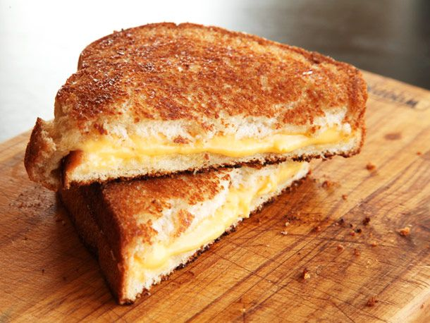

Grilled cheese recipe

Description
A delicious grilled cheese that probably wasn't really made on a grill. They're kind of a huge scam that way
Ingredients
Steps
- Heat non-stick pan to medium temperature.
- Cut enough cheese to cover bread all the way to all four corners.
- Butter one side of two pieces of bread.
- Put one piece of bread butter side down onto hot pan, add cheese, top with
remaining piece of bread buttered side up.
- Cook until lightly golden brown and flip to uncooked side. Flip frequently
after lightly golden until all cheese is melted.